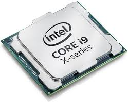
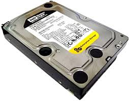
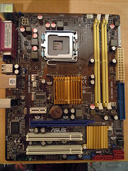
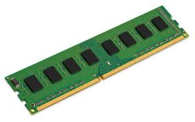
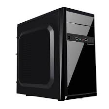
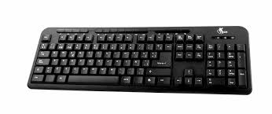
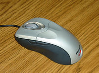
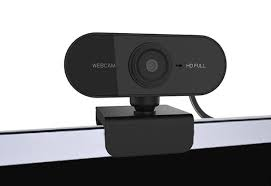
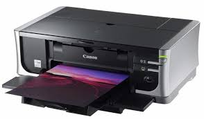

Las partes de una computadora
La computadora es, por mucho, una de las invenciones que más beneficios le han dado a la humanidad Su enorme capacidad para procesar datos la convierten en una parte fundamental en el desarrollo de la ciencia. El hardware en combinación con el software hacen que esto sea posible. El hardware de una computadora se refiere a todos esos elementos que son tangibles en una computadora, mientras que el software son aquellos programas, instrucciones y reglas informáticas que hacen posible la ejecución de tareas específicas en un ordenador.
procesador
El término "Procesador" puede referirse a los siguientes artículos: Hardware. Unidad central de procesamiento (CPU) interpreta las instrucciones y procesa los datos de los programas de computadora. 
Disco duro
En informática, la unidad de disco duro o unidad de disco rígido es un dispositivo de almacenamiento de datos que emplea un sistema de grabación magnética para almacenar y recuperar archivos digitales. 
Tarjeta madre
Es una parte fundamental para montar cualquier computadora personal de escritorio o portátil o algún dispositivo. Tiene instalados una serie de circuitos integrados, entre los que se encuentra el circuito integrado auxiliar (chipset), que sirve como centro de conexión entre el microprocesador (CPU), la memoria de acceso aleatorio (RAM), las ranuras de expansión y otros dispositivos. 
Memoria RAM
La memoria de acceso aleatorio (Random Access Memory, RAM) se utiliza como memoria de trabajo de computadoras y otros dispositivos para el sistema operativo, los programas y la mayor parte del software. 
Tarjeta grafica
Una tarjeta gráfica es una tarjeta de expansión de la placa base del ordenador que se
encarga de procesar los datos provenientes
de la unidad central de procesamiento y transformarlos en información comprensible y
representable en el dispositivo de salida.

Gabinete
En informática, la caja, carcasa, chasis, tarro, gabinete o torre de computadora u ordenador, es la estructura metálica o plástica, cuya función consiste en albergar y proteger los componentes unidad central de procesamiento (CPU), la memoria de acceso aleatorio (RAM), la placa madre, la fuente de alimentación, la/s placas de expansión y los dispositivos o unidades de almacenamiento: disquetera, unidad de disco rígido, unidad de disco óptico (lectora o grabadora de: CD, DVD, BD).1 
Monitor
El monitor de computadora (en Hispanoamérica) o monitor
de ordenador o pantalla (en España) es el principal dispositivo de
salida (interfaz), que muestra datos o información al usuario.
También puede considerarse un periférico de entrada/salida si el monitor
tiene pantalla táctil o multitáctil.

Teclado
En informática, un teclado es un dispositivo o periférico de entrada, en parte inspirado en el teclado de las máquinas de escribir, que utiliza un sistema de botones o teclas, para que actúen como palancas mecánicas o interruptores electrónicos que envían toda la información a la computadora o al teléfono móvil. 
Mouse
El ratón o mouse (en inglés pronunciado /maʊs/) es un dispositivo apuntador utilizado para facilitar el manejo de un entorno gráfico en una computadora. Generalmente está fabricado en plástico, y se utiliza con una de las manos. Detecta su movimiento relativo en dos dimensiones por la superficie plana en la que se apoya, reflejándose habitualmente a través de un puntero, cursor o flecha en el monitor. 
Audifonos
Aparato que consta de dos piezas con unos dispositivos capaces de transformar ondas eléctricas en ondas sonoras y que, unidas por una tira generalmente curva y ajustable a la cabeza, se acoplan a los oídos para la recepción del sonido.
Camara Web
Una cámara web o cámara de red1 (en inglés: webcam)? es una pequeña c ámara digital conectada a una computadora la cual puede capturar imágenes y transmitirlas a través de Internet, ya sea a una página web u otras computadoras de forma privada.plan a los oídos para la recepción del sonido. 
Bocinas
Es un artefacto que produce ruido, existen muchos tipos de bocinas, en lo que se diferencian básicamente es en el sonido que emiten, a partir de aquí, se les da un uso en particular. La concepción de una bocina es prehistórica, la idea fundamental de estas es que con el sonido que producen, se alerte a las personas de un evento que se producirá pronto.
Impresora
Una impresora es un dispositivo periférico de salida, del ordenador que permite producir una gama permanente de textos o gráficos de documentos almacenados en un formato electrónico, imprimiéndolos en medios físicos, normalmente en papel, utilizando cartuchos de tinta o tecnología láser (con tóner). 